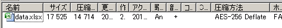

コマンドでZIPや7zにパスワードを付ける
7-Zipには強力なコマンドラインツールがあり、GUIで実行できることはコマンドプロンプトでも実行できます。パスワードを付けることも、パスワード付きのZIPファイルや7zファイルも展開（解凍）できます。
コマンド用の実行ファイルはインストールしたフォルダ（C:\Program Files\7-Zip）内に7z.exeとして置かれています。この実行ファイルは同じフォルダにある7z.dllをリンクしていますので、コマンドの実行にはこの2つのファイルが活躍します。
パスワード付けて圧縮する
コマンドラインでパスワードを付けるには、「-p」オプションを使います。
"C:\Program Files\7-Zip\7z.exe" a -pPassWord data.zip data.xlsx 7-Zip (A) 9.20 Copyright (c) 1999-2010 Igor Pavlov 2010-11-18 Creating archive data.zip Compressing data.xlsx Everything is Ok
圧縮コマンドは「a」に続けて、「-p」、空白を入れずにパスワード文字列を入力します。パスワード文字列を省略した場合は、コマンドプロンプト上で入力が促されます。
Enter password (will not be echoed):
パスワード入力時には、入力文字も*などの文字も表示されないので、正確に入力するように注意してください。
暗号化方式を強力にする（AES-256）
AES-256の強力な暗号化方式で圧縮するには、「-mem=AES256」と指定します。
"C:\Program Files\7-Zip\7z.exe" a -mem=AES256 -ssw -pPassWord data.zip data.xlsx
「-m」オプションはより詳細なオプションを指定するもので、空白を空けず、「em」（暗号化方式）を「AES256」に指定するという意味になります。
従来のZIP暗号化方式であるZipCryptは、実装上の問題があり、一部のツールではさらに脆弱性もあるため、これらで作成された暗号化ファイルは1時間もかからずに解析できてしまいます。また、特定の条件下では1分もかからずにパスワードが解析できてしまいます。7-Zipでは一部の問題を解決していますが、ZipCryptを使う限りにおいては現実的な時間でパスワードが解析できてしまうので、重要なデータの暗号化にはAES-256がお勧めです。
「-ssw」オプションについて
ログファイルや編集中のテキストやドキュメントなど、圧縮対象のファイルがほかのツールで（書き込み可能な状態で）開いている場合、圧縮ツール側から圧縮対象ファイルとして読み込みができません。そのような場合に備えて「-ssw」オプションがあります。これを付けて実行すれば、圧縮対象ファイルとして読み込むことが可能になります。
"C:\Program Files\7-Zip\7z.exe" a -ssw -pPassWord data.zip data.xlsx
複数のフォルダにまたがった特定のファイルを選択的に圧縮する
パスワードを付けて圧縮したいファイルが1つフォルダにまとまっていればとくに問題ないのですが、1つはあるフォルダにある特定ファイル、もう1つはほかのフォルダの特定ファイルなど、いくつか選択して圧縮したい場合は、圧縮したいリストファイルを使います。
たとえば、次のようなフォルダ構造のファイルがあったとして、重要のa.xlsxと秘密のすべてのファイル（z.xlsx）は圧縮対象に、b.xlsxは圧縮したくないとします。
重要 フォルダ a.xlsx b.xlsx 秘密 フォルダ z.xlsx
このような場合は、まず圧縮したいファイルをlistfile.txtのようなテキストファイルを作成し、そこに1行ごと列挙します。
重要\a.xlsx 秘密\*
保存する際は、Unicode（UTF-8）で保存することに注意してください（シフトJISで保存した場合は圧縮時に別途エンコード指定のオプションを付加する必要がでてしまいます）。
listfile.txtができたら「@」先頭に付ける形で圧縮コマンドを実行します。
"C:\Program Files\7-Zip\7z.exe" a -ssw -mem=AES256 -p secret.zip @listfile.txt Enter password (will not be echoed): ← パスワードを入力
このようにlistfile.txtを記述していくことで複雑なフォルダ構造のファイルでも、任意のファイルのみを圧縮対象にして保存することができます。
OSDN Project